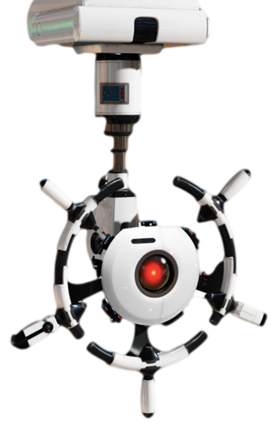

His 3 "allies" are EVE, Hal, and the plant in a way.
Eve is one of his allies because she quite literally defected from her mission, ran away with Wall-E and ended up saving his life.
Finally the plant is an "ally" because it was the only "friend" Wall-E had for many many years and brought him and EVE togehter.
Finally Hal was an ally because he many times saved them both and distracted some of the robots.
Wall-E's main 2 enemies were, AUTO who was an AI system that prevented humans returning to earth.
Secondly was GO-4 which was programmed to eliminate any plant life
